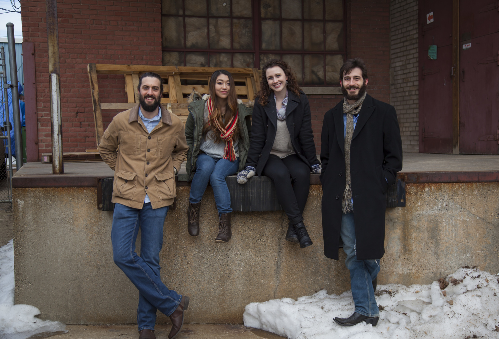

After meeting in college, the young band of idealists called The Crane Wives pursued a life of touring, building a grassroots fanbase across the midwest one room at a time. Whether playing to a thousand people at a brewery in their hometown of Grand Rapids, Michigan or to eleven people in far-flung dive bars, the four piece folk-pop group has always played with one goal in mind: to have a good time.
The pulse of the Crane Wives, Ben Zito (bass) and Dan Rickabus (drums) create a groovy backdrop integral to the band’s sound, while co-leads Emilee Petersmark and Kate Pillsbury duel on electric guitar and vocals. Known for harmonies, beaming smiles and high energy melodies that counterbalance cerebral, angsty lyrics, the Crane Wives perform symbiotically like only a band with a tenure of over a decade can.
The Crane Wives have 5 full length albums under their belts and have performed over 600 shows across the United States, including opening for acts such as The Avett Brothers, Lake Street Dive, The Dead South, Greensky Bluegrass and many more.